emp_master 테이블 생성
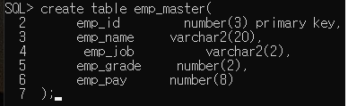
emp_master 테이블 데이터 삽입
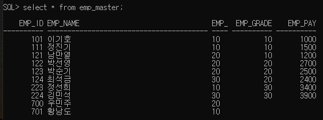
ho_master 테이블 생성
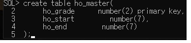
ho_master 테이블 데이터 삽입
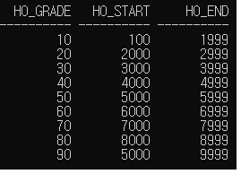
emp_grade 내림차순 emp_name 오름차순 정렬한다
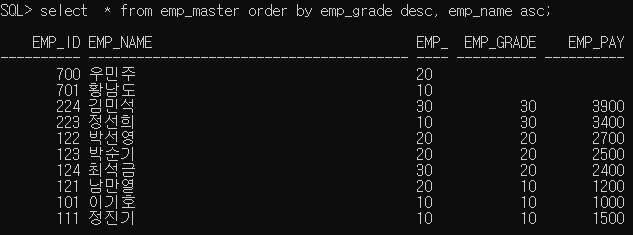
emp_job의 중복된 값을 삭제하고 오름차순으로 정렬한다
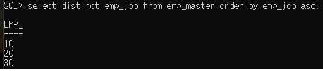
ho_start * 2 한 값이 6000 보다 큰 값을 출력해라
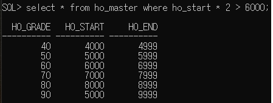
ho_start + 1000 한 값이 5000 보다 작거나 같은 값을 출력해라
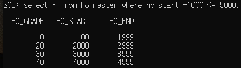
emp_job에 10이 아닌 emp_id, emp_name, emp_job값을 출력해라
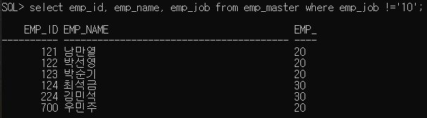
emp_grade에 10과 30이 있는 emp_id, emp_name, emp_grade값을 출력해라
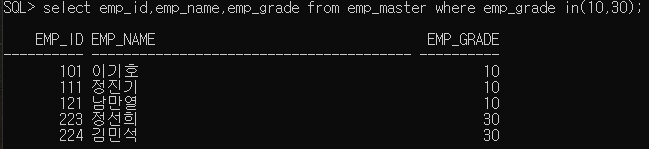
emp_pay에 null이 존재할 경우에도 +1500을 더해준다
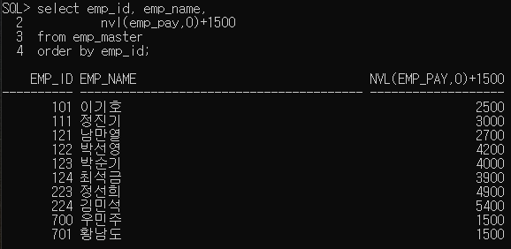
인상급여로 8시간 일한 급여를 계산하여 출력한다
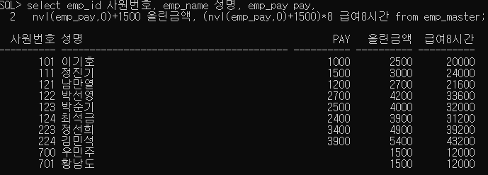